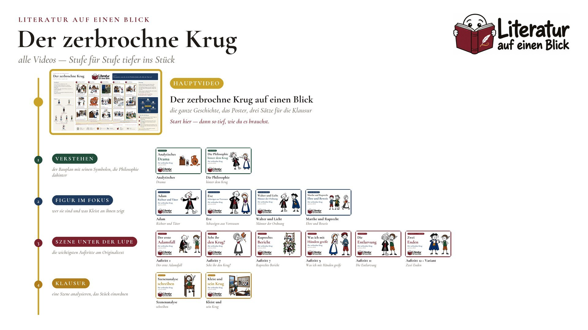

Literatur auf einen Blick · Folge 01
Der zerbrochne Krug
Heinrich von Kleist · Lustspiel · 1808
LeitfrageWas passiert, wenn der, der die Wahrheit finden soll, selbst der Täter ist?
Gestern Nacht ist ein Krug zerbrochen. Heute soll der Dorfrichter den Täter finden. Das Problem: Er war es selbst.
Das Lernplakat
Alles, was im Video entsteht, auf einem Blatt: die fünf Etappen der Handlung, die Figuren und ihre Beziehungen, die Symbole, die Deutung und drei Sätze für die Klausur.
Plakat herunterladen PNG · 9600 × 5400 px · 13.8 MB · für den Druck bis DIN A1 Kleinere Fassung JPG · 4800 × 2700 px · für Bildschirm und Tablet

Zum Lernen und für den Unterricht. Bitte unverändert weitergeben und den Kanal nennen.

Drei Sätze für die Klausur
- Form: analytisches Drama. Die Tat liegt vor dem Stück, die Handlung ist ihre Aufdeckung.
- Wirkung: dramatische Ironie. Wir wissen von Anfang an, was das Gericht erst am Ende erfährt.
- Thema: Machtmissbrauch. Wo Richter und Täter eins sind, zerbrechen Recht, Ehre und Vertrauen.
Abitur-Tipp: Den 12. Auftritt gibt es zweimal: Bühnenfassung und „Variant“.
Deutung
Richter und Täter in einer Person: Das Gericht wird zur Bühne für Ausreden.
Die Wahrheit kommt trotz des Verfahrens ans Licht: durch Widersprüche, Dinge und Eves Mut.
Walter rettet vor allem die Ehre des Gerichts. Eine Komödie mit Schatten.
„Der Richter Adam hat den Krug zerbrochen!“ (Eve, 11. Auftritt)
Die Handlung in fünf Etappen
- Der Morgen danach Auftritt 1–5
- Die Anklage Auftritt 6–7
- Die Verhandlung Auftritt 7–10
- Die Entlarvung Auftritt 11
- Die Auflösung Auftritt 11–Letzter
Figuren
- Gerichtsrat Walter prüft das Gericht, kommt aus Utrecht
- Schreiber Licht ahnt früh etwas, will selbst Richter werden
- Dorfrichter Adam Richter und Täter
- Frau Marthe Rull Klägerin, Eves Mutter
- Eve Marthes Tochter, Ruprechts Verlobte
- Ruprecht der Beschuldigte
- Veit Tümpel Ruprechts Vater
- Frau Brigitte Ruprechts Tante, Zeugin
Symbole
- Waage Recht, das zu Adams Gunsten wiegt
- Perücke Würde des Amts und Beweisstück
- Krug zerbrochene Ordnung und Ehre
- Pferdefuß der Teufel im Richter
- Apfel Adam und Eve: Versuchung und Sündenfall
- Brief Lüge mit Amtsstempel
Steckbrief
- Autor
- Heinrich von Kleist (1777–1811)
- Gattung
- Lustspiel in Blankversen, 13 Auftritte
- Entstehung
- ab 1802, Anstoß war ein französischer Kupferstich
- Uraufführung
- 2. März 1808 in Weimar, inszeniert von Goethe, ausgepfiffen
- Druck
- 1811
- Ort und Zeit
- Gerichtsstube in Huisum bei Utrecht, ein einziger Vormittag
Kapitel im Video
- 0:00 Einstieg
- 0:32 Steckbrief
- 0:53 Der Bauplan
- 1:26 Etappe 1: Der Morgen danach
- 3:11 Etappe 2: Die Anklage
- 4:20 Etappe 3: Die Verhandlung
- 5:29 Etappe 4: Die Entlarvung
- 6:36 Etappe 5: Die Auflösung
- 7:48 Die Figuren
- 8:07 Symbole
- 8:27 Deutung
- 8:48 Das philosophische Netz
- 9:09 Drei Sätze für die Klausur
- 9:41 Das ganze Poster
- 9:47 Die Videos zum Stück
Grundlage ist die Bühnenfassung des Stücks (gemeinfrei). Den 12. Auftritt gibt es zusätzlich in der längeren „Variant“-Fassung – auch sie gehört zum Prüfungsstoff.
Die Videos zum Werk
Das Hauptvideo ist der Stamm. Vier Äste führen tiefer ins Stück: die wichtigsten Auftritte am Originaltext, die Figuren, der Bauplan des Dramas und die Klausur. Was noch fehlt, ist in Arbeit und erscheint im Kanal.
Schon erschienen
-
Szene unter der Lupe
Der erste Adamsfall
-
Verstehen
Analytisches Drama
-
Szene unter der Lupe
Was ich mit Händen greife

Szene unter der Lupe
ein Auftritt, eine Stelle, ganz nah am Text
- S1 Der erste Adamsfall Auftritt 1
- S2 Seht ihr den Krug? Auftritt 7 geplant
- S3 Ruprechts Bericht Auftritt 7 geplant
- S4 Was ich mit Händen greife !Auftritt 9
- S5 Die Entlarvung Auftritt 11 geplant
- S6 Zwei Enden Auftritt 12 + Variant in Arbeit
Figur im Fokus
wer sie sind und was der Autor an ihnen zeigt
- F1 Adam Richter und Täter geplant
- F2 Eve Schweigen aus Vertrauen geplant
- F3 Walter und Licht Männer der Ordnung geplant
- F4 Marthe und Ruprecht Ehre und Beweis geplant
Verstehen
der Bauplan, die Symbole, die Philosophie dahinter
- V1 Analytisches Drama
- V2 Die Philosophie hinter dem Krug geplant
Klausur
was in der Prüfung gefragt wird und wie du es schreibst
- K1 Szenenanalyse schreiben in Arbeit
- K2 Kleist und sein Krug geplant